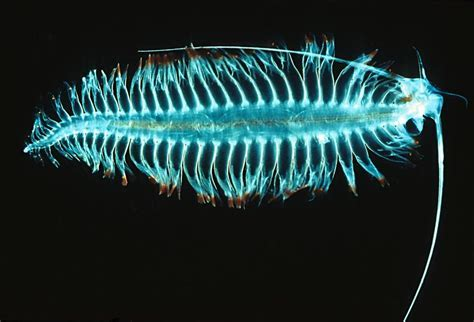
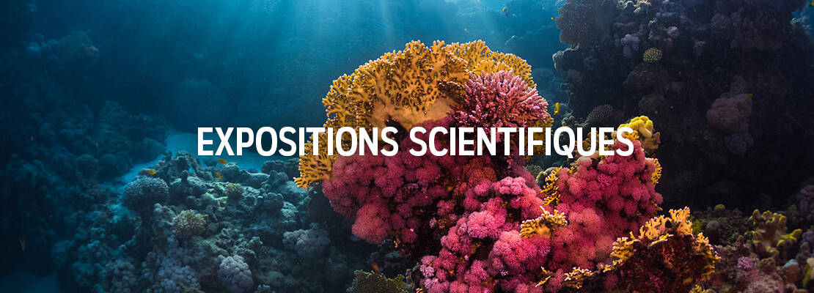

Plancton
Cténophore

Calamar

Home
Plongez dans une aventure immersive et interactive inédite pour une rencontre intime avec les espèces des profondeurs abyssales. L'Aquarium Bioluminescent des Abysses est un mur numérique vous invitant à rencontrer les animaux lumineux des prodondeurs marines. Seul, ou à plusieurs, vous plongerez virtuellement avec des espèces bioluminescentes et pourrez intéragir avec elles, grâce à des capteurs de mouvements. En observant, en bougeant et en vous amusant, vous déclencherez les comportements de ces créatures lumineuses.
Avec plus de 300 espèces animales vivant dans plus de 80 milieux différents, l’Aquarium Bioluminescent est un hot spot de biodiversité. Apprenez comment ces espèces font pour se nourrir, se reproduire ou respirer, découvrez leurs relations, leur classification, comprenez des mécanismes biologiques comme la bioluminescence ou l’électrolocation
Des espèces bioluminescentes
Les abysses, littéralement & un domaine dont l'immensité est insondable, sont dans le langage courant le territoire des grandes profondeurs océanes, là où la lumière du jour ne pénètre jamais. Un monde étranger à l'homme, un environnement hors d'atteinte, démesuré et hostile, cachant parfois des terreurs irraisonnées.
la bioluminescence est la production de lumière « froide » Ces animaux marins privés de la lumière du soleil, émettent une lumière naturelle servant à communiquer entre eux ou encore à se protéger des prédateurs. La plupart des animaux marins produisent leur propre lumière ou hébergent des bactéries qui le font. Une aptitude qui leur permet de communiquer, de trouver leur proie, de se camoufler et bien plus encore.